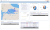
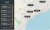
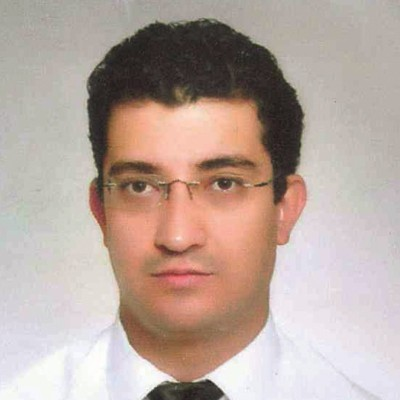
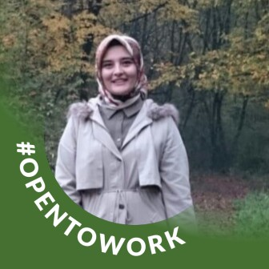

Hayalinizdeki yazılım hızla ve bütçenizi sarsmadan gerçek olsun
Müşterilerime yazılım mimari ve geliştirme hizmetleri sunuyorum.
Müşterilerime Sağladığım Hizmetler
Sisteminizi benimle birlikte tasarlayıp geliştirmek ister misiniz?
KURUMSAL YAZILIM, WEB UYGULAMALARI, MİKROSERVİSLER
Deneyim:
16 yılı aşan yazılım mühendisliği deneyimi
Java, web programlama (HTML, CSS, JavaScript, vb.) ve tam katmanlı geliştirme (Maven, Spring, REST, Docker, Hibernate, SQL, vb.).
Yetenekler:
Kurumsal uygulamalar
Mikro-servisler
Ağ ve HTTP mimarisi
Arka katman ve ön yüz geliştirme
Veritabanları ve uygulama sunucuları
Konteynerleştirme ve orkestrasyon
Etki alanı ve test güdümlü yazılım geliştirme
Yazılım geliştirme yaşam döngüsü
Sürekli entegrasyon ve çevik programlama
Özgüven: Yazılım projelerinizi tamamlamanıza yardım etmek için doğru kişi olduğuma inanıyorum.
Aşağıdaki form üzerinden bana ulaşın; hayalinizdeki yazılım fikri için size nasıl yardım edebileceğimi konuşalım.
"TÜM İŞLERİN YÜZDE 80'İ İNSANLARLA İLETİŞİM KURMAKTAN İBARETTİR"
Deneyim:
Geçmiş yıllar içinde kendi katmanlı mimarilerimi geliştirdim ve bunları çeşitli projelerde kullandım.
Yenilikler:
Modern teknoloji trendleri ve bulut bilişim alanlarında da yetkinliğimi artırdım.
İletişim:
Projeleri tamamlamak ve hedeflere ulaşmak üzere şirketlerin bünyesindeki teknik personelle ve teknik olmayan çalışanlarla rahatlıkla iletişim kurabilen birisiyim.
Modernizasyon:
Eski uygulamaların modernizasyonunda da aktif rol üstlendim.
PAYLAŞMAYA, YARDIM ETMEYE, DESTEK OLMAYA VE ÖĞRENMEYE DUYULAN HEYECAN
Destek ve Danışmanlık:
Yıllar boyu, görece az deneyimli sevgili iş arkadaşlarıma eğitim, danışmanlık, destek ve yönlendirme sağlamakla tanındım.
Tatminiyet:
Çalıştığım yerlerde bir çeşit 'tekno-psikolojik' misyon yürüterek derin bir tatminiyet yaşadım.
Felsefem:
Eğitim karşımdaki kişiye sadece bilgi aktarmak değildi; konuyu sindirebilmesi için onu hazırlayarak sarf ettiğim sanatsal bir çabaydı..
Portföyüm
Geçmiş projelerimden bazılarını görmek isteyebilirsiniz. Ortak noktalarda buluşmak dileğiyle..
Benimle iletişime geçmek ve hakkımdaki bütün ayrıntıları görmek için
LinkedIn ve
Upwork profillerime göz atabilirsiniz.

Düzenli Sefer Bilgi Sistemi (Java, Spring, JPA/Hibernate, Apache Wicket)
Türk denizlerinde düzenli seferler yapan şirketlerin Ulaştırma ve Altyapı Bakanlığı nezdinde ruhsatlandırılması için başvuru, onay ve ödeme işlemlerinin tam otomasyon içerisinde yürütülmesini sağlayan uygulama.
Harita takibi, grafik, istatistik, dinamik raporlama, loglama, kimlik doğrulama ve yetkilendirme gibi çeşitli yönetimsel araçlar ve Türkçe - İngilizce dil desteği sunacak şekilde geliştirilmiştir.
Ulaştırma ve Altyapı Bakanlığı'nın çeşitli uygulamaları için geliştirdiğim rol, yetki ve departman yönetim arayüzü.
Kullanım kolaylığı ve esnekliği sağlamak amacıyla form sihirbazı, akordiyon, bağlam menüleri, veri tabloları, açılıp pencere gibi modern ve zengin görsel bileşenlerden faydalandım.
Bu portalin tam katmanlı mimarisi, tasarımı, geliştirmesi, idamesi ve sürekli entegrasyonu tarafımca gerçekleştirilmiştir.
Talep edilmesi durumunda Kurum güvenliğini göz önünde bulundurarak daha ayrıntılı bilgi verebilirim.

Mapty - Günlük Yürüyüş ve Bisiklet Sürme Kayıtları (HTML, CSS, JavaScript, leaflet.js)
Modern JavaScript özelliklerini öğrenmek ve JavaScript yeteneklerimi hatırlamak için aldığım The Complete JavaScript adındaki Udemy eğitiminde ödev olarak geliştirdiğimiz arayüz.
Bu projede günlük spor etkinliklerinin harita üzerinde etkileşimli şekilde yönetilebilmesi için HTML, CSS, Web API'leri, JavaScript ve leaflet.js kulllandık.
Uygulama ilk açılışta izin dahilinde jeo-lokasyon tespiti yaparak harita üzerinde günlük yürüyüş ve bisiklet sürme kayıtları tutmanızı sağlıyor.
Geçmiş kayıtlarınızı harita üzerinde görüp bunlar arasında gezinebilir, kayıtlarınızı düzenleyip silebilir, çeşitli parametrelere göre sıralayabilirsiniz. Haritayı tüm kayıtlarınızı aynı anda görecek şekilde pencereye sığdırabilirsiniz.
Modern JavaScript özelliklerini öğrenmek ve JavaScript yeteneklerimi hatırlamak için aldığım The Complete JavaScript adındaki Udemy eğitiminde ödev olarak geliştirdiğimiz diğer bir arayüz.
Pig oyunu olarak bilinen uygulamayı geliştirmek için HTML, CSS ve JavaScript kulllandık. İki oyuncu zar atarak skor biriktirir ve 50 puana ilk ulaşan oyuncu oyunu kazanır.
Birlikte çalıştığım sevgili iş arkadaşlarımın LinkedIn profilimdeki Tavsiyeler bölümü için yazdıklarına lütfen göz atın.
..her takıma ilham olabilecek niteliktedir ve liderlik özelliği taşımaktadır..
Yaklaşık 1 yıl süre içerisinde Ahmet Bey ile bazı projelerde çalışma fırsatımız oldu. Yüksek tecrübesiyle beraber geniş bir bakış açısına sahip olması ve çözüm odaklı yaklaşımı sayesinde çok iyi bir takım olduk. Farklı disiplin alanlarında çalışıyor olsak da, iyi bir iletişim kurarak hem farklılıklarımızı öğrendik hem de geliştirmek için çaba gösterdik. Örneğin, oluşturulan tasarımların web ortamına aktarılması, kullanıcı dostu modern bir arayüze çevrilmesi ve sisteme entegre edilmesi oldukça başarılıydı. Çalışmalarını izlerken ne kadar profesyonel olduğunu ve işini nasıl sahiplendiğini tüm samimiyetimle belirtmek isterim. Ahmet Bey, alanındaki bilgi birikimi sayesinde her takıma ilham olabilecek niteliktedir ve liderlik özelliği taşımaktadır. İş süresi içerisinde ve dışında değer kattık, değer kazandık. Diğer yandan, sosyal faaliyetler açısından da olumlu bir arkadaşlık elde ettik. Ne zaman ve nerede olursa olsun, bir kahve içebileceğim ve içtenlikle sohbet edebileceğim nadir dostlarımdan biri haline gelmiştir.
Çağlar Akdoğan
Art Director | Creative Designer | Head of Design
..tecrübesiz mühendislere yardımcı olması ile öne çıkar..
Ahmet bey yazılım ve devops konularında kendini geliştirmiş, sorunları ele alışı ve yarattığı çözümler ile öne çıkan örnek bir çalışan.
Ekip içinde bilginin yayılması, tecrübesiz mühendislere yardımcı olması ile öne çıkar.
Her yazılım şirketi bilgisi ve tecrübesinden faydalanabilir.
Gürcan Birol Karagöz
FONET Bilgi Teknolojileri, Yazılım Geliştirme Koordinatörü
..sorun çözücü..
Çalışkan, özverili ve sorun çözücü.

Ömer Özgür Özkorkmaz
System And Database Administrator
..her soruya sabırla cevap verdiği ve bilgisini ve tecrübesini bizimle paylaştığı için..
Ahmet bey ile aynı takımda ve aynı projede çalışmak çok güzeldi…
Kendisine sorduğumuz her soruya sabırla cevap verdiği ve bilgisini ve tecrübesini bizimle paylaştığı için çok teşekkür ederim. Umarım tekrar çalışmak kısmet olur.
Barış Özcan
Senior Software Developer
..belki karmaşık sorunları sakinliği ile çözüyor..
Ahmet abi çok titizdir. Sayesinde çok şey öğrendik diğer yöneticiler gibi bencil değildir. Bildiğini paylaşmayı sever. Sessiz, sakin ve hayata karşı her zaman pozitif bakacak pencereler bulmuştur. Belki karmaşık sorunları sakinliği ile çözüyor. Emekleri için çok teşekkür ediyorum.
Yunus Yemişli
Mühendis, Sistem ve Ağ Uzmanı
..işini severek yapmasıyla bizlere örnek oldu..
Ahmet Yaşar Özer ile aynı şirkette 1 yıldan fazla çalışma fırsatı buldum. Kendisinin gerçek bir lider olduğundan şüphem yok. Çalışma arkadaşlarına her zaman yardımcı olması, işini yaparken bizlere eğlenceli şekilde aktarıp yönlendirmesi, yeni teknolojiler üzerinden örnekler vererek değerlendirmesi ve işini severek yapmasıyla bizlere örnek oldu. Çalışma hayatında hangi firmada olursa olsun o firma için büyük bir mücevher, örnek bir kişilik olacağından eminim.
Emre Çetin
Java Yazılım Uzmanı | T.C. Sanayi ve Teknoloji Bakanlığı
..uzmanlığının yanı sıra güzel kişiliği..
Teknik bilgi, becerisi, uzmanlığının yanı sıra güzel kişiliği olan ender insanlardan birisidir Ahmet Yaşar Özer. Aynı şirkette beraber çalışma fırsatımız oldu. Umarım bir gün beraber yan yana çalışma fırsatını tekrar yakalarız. Onunla çalışma fırsatını yakalayan herkesin çok şanslı olduğunu düşünüyorum.
Atilla Fidan
FONET Bilgi Teknolojileri A.Ş. şirketinde Java Software Team Lead
..öğrenmeye açık, kendini her yönde geliştirmeye adamış mükemmel bir hoca..
Ahmet Yaşar Özer, işini her daim ciddiye alan, öğrenmeye açık, kendini her yönde geliştirmeye adamış mükemmel bir hocadır. Bilgi paylaşımına açık, bildiklerini asla kendine saklamayıp sorulan sorunun her detayına cevap verecek bilgi birikimine sahiptir. Aynı ekipte çalışmaktan her daim mutlu olduğum bir ekip arkadaşı. En güzeline sahip olman dileyle.

Rabia Özdemir
Java Software Developer / Computer Engineer
..kendisiyle çalışmak çok keyiflidir..
Ahmet Yaşar Özer tecrübeli bir hoca, iyi bir yol göstericidir. İşini her daim ciddiye alır. Kendisiyle çalışmak çok keyiflidir.